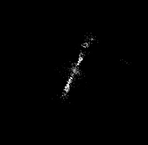
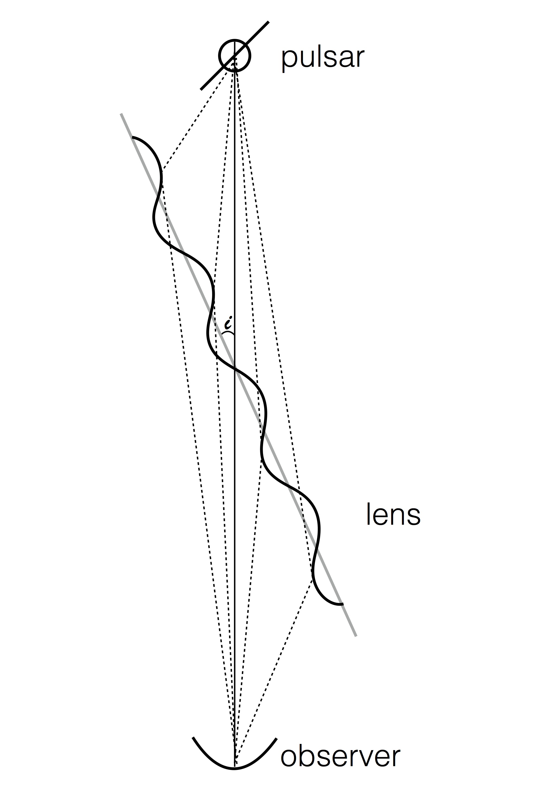
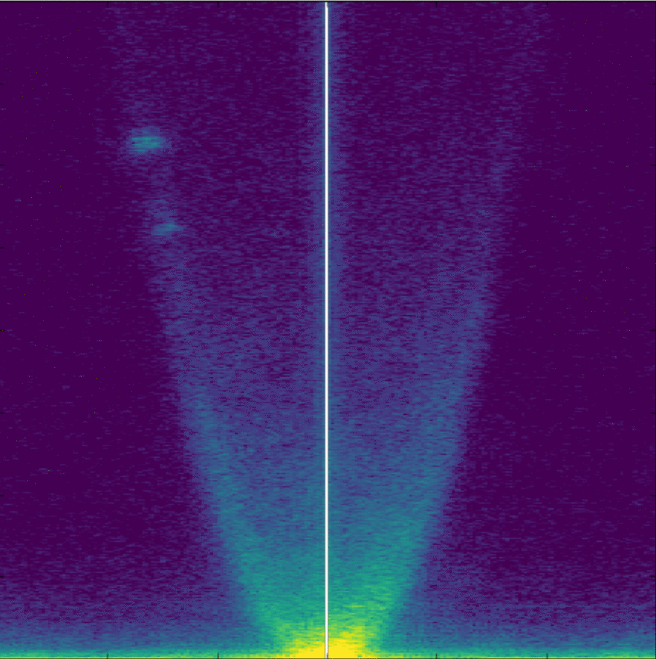

About me
I'm a postdoctoral researcher in Radio Astronomy at Caltech, where I primarily
study pulsars, FRBs and other compact radio objects and their interactions with
the media that they pass through on their way to Earth. By disentangling these
propagation effects from the intrinsic natures of these sources, I hope to
learn more about both the sources themselves and the material in our Galaxy, other
galaxies, and the intergalactic medium of the Universe.
My Research
FRB localizations with the Deep Synoptic Array
The 110-element Deep Synoptic Array is currrently under construction
at the Owen's Valley Radio Obsevatory in California, and consists of 110 5-m radio dishes. The DSA
will find FRBs and pinpoint their locations in the sky, allowing us to determine the galaxies
from which these bursts came. These FRB observations will help answer the questions concerning
the nature of the sources of FRBs and the distribution of material within and between galaxies.

Reconstructing scattering screens
In order to study pulsar scintillation (variations in a pulsar's observerd
flux due to the interference of rays scattered in the interstellar medium)
and the small scale plasma
structures that cause it, we first need
to be able to reconstruct the scattered image of the pulsar.
Pulsars themselves would appear as unresolved points on the sky if
there were no intervening plasma structures in the way, and even
when scattered are very small so that traditional imaging techniques
are not sufficient to reconstruct the scattered image of the
pulsar. Part of my research is developing the techniques that can
be used to extract information, even if the scattering environment
is complicated, with multiple different scattering screens between
us and the pulsar. To the left is a reconstructed image of PSR
B0834+06 I created based on
VLBI observations taken by Brisken et al. (2010).

Models of pulsar scintillation
As pulsar radiation travels towards us, it is scattered and
lensed by plasma structures in the interstellar medium. Recently,
structure has been noted in scintillation patterns that suggests
highly anisotropic scattering at one or more screens along our
line-of-sight to the pulsar. Along with my advisor, Ue-Li Pen, I
developed a model of pulsar scintillation based on the theory that
scintillation is due to grazing refraction lensing of the pulsar emission by
plasma sheets in the interstellar medium. In this picture, a plasma
screen with a slightly different index of refraction than the
surrounding interstellar medium is
very closely aligned with the line-of-sight to the pulsar, so that
only small perturbations on the screen are needed to bend the pulsar
light, as shown in the cartoon to the right.
Models of this process make clear predictions about the
evolution of the scattering with time and frequency. By comparing
these predictions to observations of pulsars, we can
start to narrow down the causes of pulsar scintillation. Because
these models are predictive, they may also be integral in removing the
effects of scattering plasma screens in low-frequency observations of
pulsars. You can check out a talk I gave on this research here.

The scintillation of PSR B0834+06
In the fall of 2016, we undertook a global VLBI campaign using in
order to track the
evolution of the scintillation pattern of PSR B0834+06 over 6 weeks.
The image on the left shows the secondary spectrum (the power
spectrum of the observed interference pattern) over the observation,
constructed from the data recorded at Arecibo.
We see individual reverse arclets appear in the
left hand side of the secondary spectrum and then traverse through the
spectrum. This indicates that small, compact regions of the screen
are moving in front of the pulsar. The motion of these can be
compared to expectations from models, including from the plasma sheet
model. We also see a persistent, diffuse
parabolic arc of power, which suggests that compact regions aren't the
full story of how the plasma sheet scatters the pulsar emission.
Using interstellar scattering screens to resolve pulsar emission regions with at the Algonquin Radio Observatory
During my PhD, I was also involved in the revitalization of the Algonquin Radio
Observatory 46-m radio telescope in Ontario, Canada. We observed bright pulsars with the ARO
46-m in order to search for evidence that instellar screens were resolving pulsar emission
regions. You can check
out a public
talk I gave about using ARO for global pulsar VLBI as
part of Astronomy on Tap T.O.